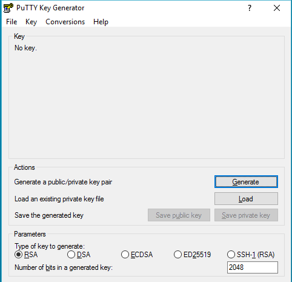
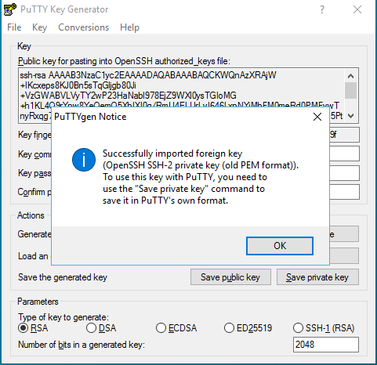
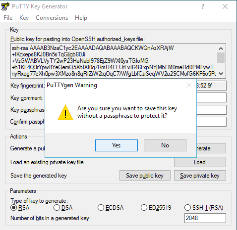
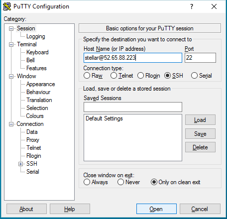
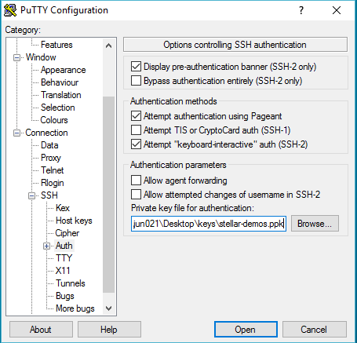
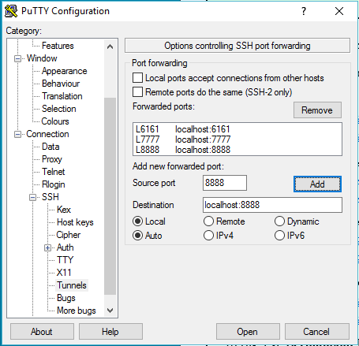
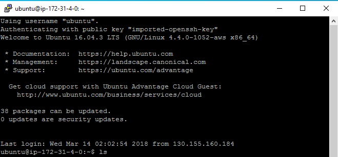

Connecting to your Stellar Demo Platform
The following instructions can be used to connect to a Stellar server, either to get console access (to install, start, stop or configure the platform) or to gain browser access to the UI and Python notebook.
Connecting with a web browser
When working on a remote client machine, connecting to the Stellar server through a web browser installed on the client is the recommended procedure.
To make the connection possible, together with a web browser, software to create encrypted SSH tunnels (also known as port forwarding) is required on the client machine.
The general procedure is therefore:
- Build a tunnel connection to the server, forwarding ports 6161 (main UI), 7777 (file sharing), 8888 (Python notebook) and 3010 (Search UI). For Windows, this is described here. For macOS or Linux, this is described here.
- Start the local browser and open the following links in separate tabs:
- Web UI
- File transfer - if installed
- Python notebook
- Search UI
Note: at the moment the only officially supported browser is Google Chrome.
The remainder of this document details the steps and required software to created a tunnel connection on Linux, macOS and Windows systems.
This procedure was tested, and is guaranteed to work, only on the following systems:
- macOS Sierra or HighSierra, with default SSH client
- Ubuntu Linux 16.04, with default SSH client
- Windows 10, with PuTTY v0.70
Additional software
The software packages above are sufficient for importing data into Stellar, triggering the graph analytics pipeline and retrieving the results. To visualize the output of certain operations a client application capable of displaying GDF and GraphML is required.
The recommended application, which has been tested with Stellar output data formats, is Gephi.
Connecting from Windows
Download and install PuTTY https://www.putty.org. You will need PuTTYgen and the PuTTY SSH client itself to connect to the remote machine.
PuTTYgen
If you have a .pem file, the private key format generate by AWS EC2, you can convert it into a format that can be used by PuTTY using PuTTYgen (.ppk).
To convert your private key:
- Start PuTTYgen.
-
Under Type of key to generate, choose RSA

-
Import the .pem file.

-
Save private key.

PuTTY
You can now connect to the remote machine via PuTTY.
- Start PuTTY.
-
Fill in the host name.

-
Navigate to the Auth section and locate your private key file for authentication.

-
Navigate to the Tunnels section to add 6161, 7777, 8888 and 3010 as new forwarded ports.
Note: 4 ports must be forwarded, but only 3 are visible in the screenshot below.

-
Click Open to connect.

Connecting from macOS or Linux
-
Open a terminal.
-
Ensure that your .pem file is private with the correct permissions
bash chmod 400 ~/keys/stellar-demos.pem -
Use the ssh command to connect to the remote machine.
bash ssh -i ~/keys/stellar-demos.pem ubuntu@REMOTE_IP_ADDRESSwhereREMOTE_IP_ADDRESSis the address of the remote machine. -
In a new shell, on the local machine, forward the ports 6161, 7777, 8888 and 3010.
bash ssh -N -i ~/keys/stellar-demos.pem -L 8888:localhost:8888 -L 6161:localhost:6161 -L 7777:localhost:7777 -L 3010:localhost:3010 ubuntu@REMOTE_IP_ADDRESSIf you would like to change the port to map to, the syntax for the ssh command is[local-port]:localhost:[remote-port] -
Open the browser on your local machine and use the pages as described above
-
To inspect the Stellar logs on the remote machine, run the following command
bash docker logs --follow DOCKER_CONTAINER_NAMEwhereDOCKER_CONTAINER_NAMEis the name of one of the running containers. A list of running containers can be shown with the commandbash docker ps